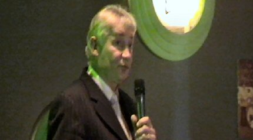
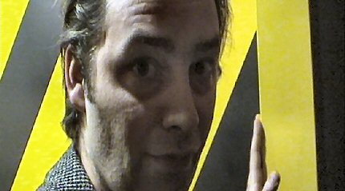
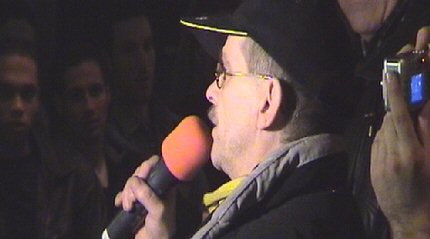
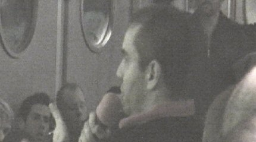
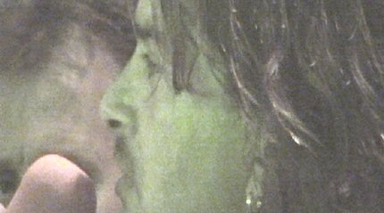
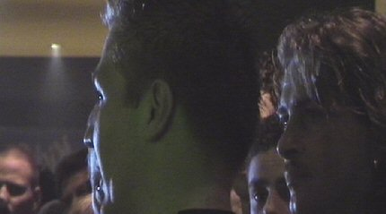
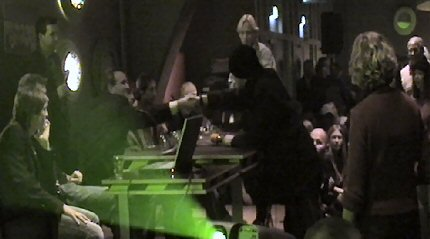
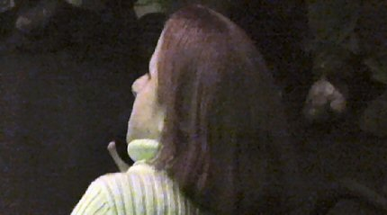
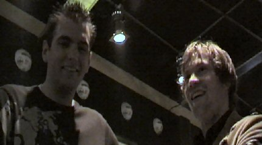
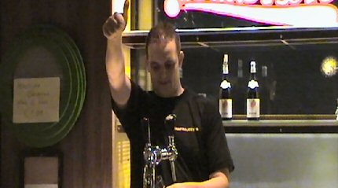

|
Forumavond 24 november 2004 |
De eerste forumavond was meteen een succesvolle.
Een afgeladen volle Kick Off kon ten overstane van een volledige spelersselectie
plus trainer alsmede een afvaardiging van het bestuur alle vragen afvuren.
Eer het zover was deed part-time voorzitter Servé Kuijer in onvervalst plat een
welkomstwoord wat gevolgd werd door een lang betoog van Marc Luijpers die nog
eens uitleg gaf over de perikelen naar aanleiding van de niet gevolgde straf van
trainer Vloet (GAE-RJC).
Daarna mochten de
aanwezige supporters hun vragen stellen aan de Roda-afvaardiging. Hierbij moet
aangetekend worden dat Kuijer slechts korte tijd aanwezig kon zijn en dat
hendriks helemaal niet aanwezig was. De spelers van
Roda waren allemaal aanwezig. Spreekstalmeester was Eric vd Luer.

Servé deed alleen de eerste helft mee.

L1 in de ban door Vloet: oud zeer??? Volgens deze reporter is Wiljan een op en
top media-getrainde prater die a-b-s-o-l-u-u-t niet tegen kritiek kan.
Marc gaf uitleg over de niet-betaalde boete die door Vloet werd opgelegd n.a.v.
de wanprestatie tegen de Eagles. Het gebaar dat de selectie maakt blijkt een
drankje plus een artiest(en) na Roda-Aachen op 15 januari. DOGMAN ?????
De selectie zal in elk geval aanwezig zijn op deze avond.

Tweety (Henk Muijs) had een aardige vragenlijst voor Vloet en consorten.

Izz was er ook en hij durfde kritiek richting Sergio te sturen. Voorts maakte de
grensbewoner ons op overdrachtelijke wijze duidelijk dat menigeen bij
wanprestatie na een tweede waarschuwing voor zijn baan moet vrezen.

Ron stelt zich met name kritisch op richting bestuur.

Mo komt achter de tap vandaan, (het FP verzorgde vanavond de uitbating), om
enkele kritische vragen te stellen.

Betoog van een zwaar geëmotioneerde supporter die de selectie en de trainer een
hart onder de riem steekt.

Janine vraagt waarom er zo weinig jeugdspelers een kans krijgen.

Na afloop van het discussie-gedeelte mengen de spelers (niet alle) zich onder
het publiek. Hier is Bart met zijn idool Gregoor verenigd.

Kix wah PW....;-)
De eerste forumavond van dit seizoen werd alom gewaardeerd. Eigenlijk
werd er meer rechtgebreid aan de verstoorde "vriendschapsband" tussen club en
supporters dan aan echte oplossingen voor de problemen op en rond het veld. Maar
daar had men vrede mee want vanavond heerste er iets van het oude
Kaalheide-gevoel dat men al zo lang ontbeert....
©
Koempels Pleasure Dome
|